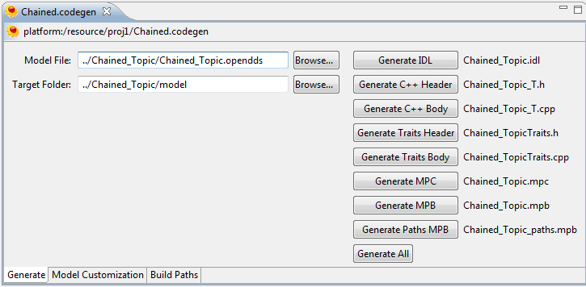

The generate parameters are selected on the Generate tab of the Codegen editor.
The generate parameters consist of:
The model file can be selected using the Browse button next to the Model File text field. Navigate to the desired .opendds model file and hit OK.
The target directory can be selected using the Browse button next to the Target Directory text field. Navigate to the desired generation directory and hit OK.
Also on the Generate tab are a series of Generate buttons. These buttons are used to generate the various output files.
Next to each generate button is the name of the file it will generate, based upon the model name.
The generate all button is a shortcut for hitting each generate button.